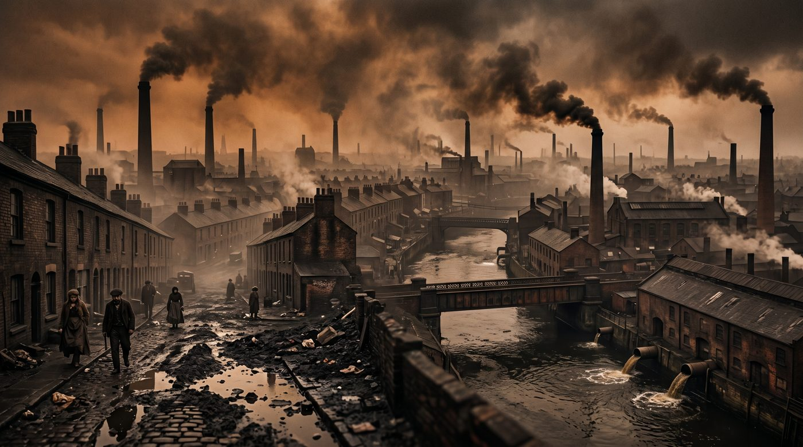
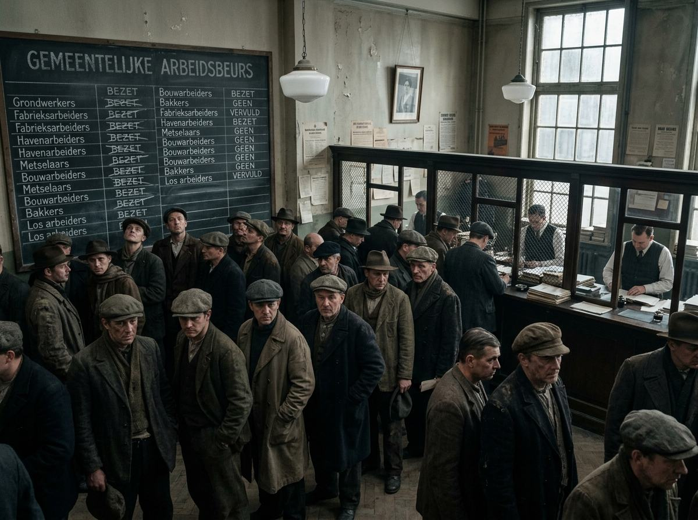

De vier boekjes
Kies je boekje
Boekje 3 en 4 komen in het tweede deel van het jaar.

Boekje1
De industriële samenleving in Nederland
- H1De Industriële Revolutie in Engeland
- H2De Industriële Revolutie in Nederland
- H3De sociale verhoudingen in Nederland
- H4Welvaart voor iedereen

Boekje2
Sociale zekerheid en verzorgingsstaat in Nederland
- H1Armenzorg en de sociale kwestie
- H2Crisis, ellende en schaamte
- H3Nooit meer armoede!
- H4De toekomst van de verzorgingsstaat
Boekje3
Boekje 3
Volgt in het tweede deel van het jaarBoekje4